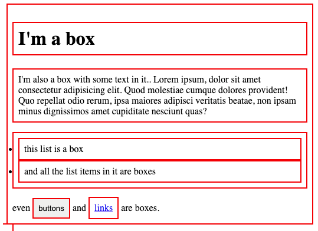

The box model is the first most important step to being successful in CSS. Everything on the web page is a box. You can have boxes inside a box or side by side each other.
These boxes can be roughly understood by using the 'Outline' Property on all elements (Using the Universal selector). The boxes wont be visible unless you give a border, border thickness and border color value.
Result:The red borders around he boxes to make them visable
The size, shape and space around them can be manipulated in many different ways using 'Padding','Margin' and 'Borders'